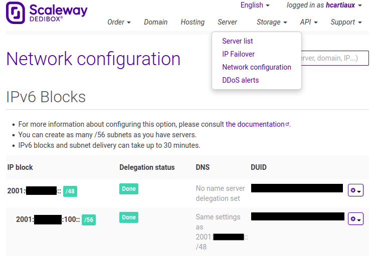

Dedibox - set-up a virtualization server with Debian, KVM/libvirt and IPv6
The objective is to set-up a virtualization server on a dedibox server with IPv6 support at NATed IPV4.
I use this configuration as a cheap “home lab” virtualization server.
In IPv4, the customer will buy “failover IPs” individually, register the virtual machines mac addresses on the web console, and bridge the host server physical network interface. If the server emits packets from unregistered mac addresses, the server will be flagged and put offline (as a security measure).
It is not possible to register additional mac addresses without buying additional “failover IPs”, so we cannot bridge the physical network interface. Instead, we will route the IPv6 traffic and NAT the IPV4 traffic on the host server.
- Buy a “Dedibox” server on online.net, bootstrap it with Debian 12.
Network configuration
Addressing Scheme
IPv6
Online allocates a /48 to each customer, we will split it and create a /56 in the console.

| Server name | interface | IPv6 | IPv6 GW |
|---|---|---|---|
| Host | enp1s0 |
2001:xxx:xxx:100::1/64 |
AUTO (RA) |
| Host | vmbr0 |
2001:xxx:xxx:100::2/64 |
N/A |
| VM1 <ID=1> | enp1s0 |
2001:xxx:xxx:100::[2+\<ID>]/64 |
2001:xxx:xxx:100::2/64 |
IPv4
| Server name | interface | IPv4 | IPv4 GW |
|---|---|---|---|
| Host | enp1s0 | DHCP | DHCP |
| Host | vmbr0 | 192.168.0.1/16 |
N/A |
| VM1 <ID=1> | enp1s0 | 192.168.0.[2+\<ID>] |
192.168.0.1 |
System configuration
- Configure DHCPv6 to request your IPv6 block, create a file
/etc/dhcp/dhclient6.conf. Replace the client-id value by the DUID given in the console.
interface "enp1s0" {
send dhcp6.client-id xx:xx:xx:xx:xx:xx:xx:xx:xx:xx;
request;
}
- Install
bridge-utils(mandatory) and other convenient packages on the server
apt install bridge-utils
apt install vim tmux tcpdump dnsutils htop sudo strace git curl
- Enable IPv6, and configure IPv4 and IPv6 routing
echo ipv6 > /etc/modules-load.d/modules.conf
echo options ipv6 disable=0 > /etc/modprobe.d/local.conf
echo net.ipv6.conf.all.forwarding = 1 >> /etc/sysctl.d/ipv6.conf
echo net.ipv6.conf.all.proxy_ndp = 1 >> /etc/sysctl.d/ipv6.conf
echo net.ipv6.bindv6only = 1 >> /etc/sysctl.d/ipv6.conf
echo net.ipv4.ip_forward=1 >> /etc/sysctl.d/ipv4.conf
echo net.ipv4.conf.all.forwarding=1 >> /etc/sysctl.d/ipv4.conf
sysctl -f /etc/sysctl.d/ipv6.conf
sysctl -f /etc/sysctl.d/ipv4.conf
- In
/etc/network/interfaces, configure the physical network interface (enp1s0) for IPv4 (dhcp) and IPv6.
# This file describes the network interfaces available on your system
# and how to activate them. For more information, see interfaces(5).
source /etc/network/interfaces.d/*
# The loopback network interface
auto lo
iface lo inet loopback
# The primary network interface
allow-hotplug enp1s0
# IPv4
iface enp1s0 inet dhcp
# IPv6
iface enp1s0 inet6 static
address 2001:xxx:xxx:100::1
netmask 64
accept_ra 2
pre-up sleep 2
pre-up dhclient -cf /etc/dhcp/dhclient6.conf -pf /run/dhclient6.enp1s0.pid -v -nw -6 -P enp1s0
pre-down dhclient -x -pf /run/dhclient6.enp1s0.pid
- Configure a network bridge
vmbr0for the virtual machines, and set an IPv4 and IPv6 on the interface. At the same time, we pre-configure the IPv62001:xxx:xxx:100::[3-7]for the future VMs.
auto vmbr0
iface vmbr0 inet6 static
address 2001:xxx:xxx:100::2
netmask 64
dad-attempts 0
bridge_ports none
bridge_stp off
bridge_fd 0
post-up /sbin/ip -f inet6 neigh add proxy 2001:xxx:xxx:100::2 dev vmbr0
post-up /sbin/ip -f inet6 neigh add proxy 2001:xxx:xxx:100::3 dev enp1s0
post-up /sbin/ip -f inet6 route add 2001:xxx:xxx:100::3 dev vmbr0
post-up /sbin/ip -f inet6 neigh add proxy 2001:xxx:xxx:100::4 dev enp1s0
post-up /sbin/ip -f inet6 route add 2001:xxx:xxx:100::4 dev vmbr0
post-up /sbin/ip -f inet6 neigh add proxy 2001:xxx:xxx:100::5 dev enp1s0
post-up /sbin/ip -f inet6 route add 2001:xxx:xxx:100::5 dev vmbr0
post-up /sbin/ip -f inet6 neigh add proxy 2001:xxx:xxx:100::6 dev enp1s0
post-up /sbin/ip -f inet6 route add 2001:xxx:xxx:100::6 dev vmbr0
post-up /sbin/ip -f inet6 neigh add proxy 2001:xxx:xxx:100::7 dev enp1s0
post-up /sbin/ip -f inet6 route add 2001:xxx:xxx:100::7 dev vmbr0
iface vmbr0 inet static
address 192.168.0.1
netmask 255.255.0.0
- Set the
iptablesrules for the IPv4 NAT configuration. Install the packageiptables-persistentto save and restore the iptables rules on reboot.
apt install iptables-persistent
In the file /etc/iptables/rules.v4
*nat
:PREROUTING ACCEPT [0:0]
:OUTPUT ACCEPT [0:0]
:POSTROUTING ACCEPT [0:0]
# Do not masquerade to these reserved address blocks.
-A POSTROUTING -s 192.168.0.0/16 -d 224.0.0.0/24 -j RETURN
-A POSTROUTING -s 192.168.0.0/16 -d 255.255.255.255/32 -j RETURN
# Masquerade all packets going from VMs to the LAN/Internet.
-A POSTROUTING -s 192.168.0.0/16 ! -d 192.168.0.0/16 -p tcp -j MASQUERADE --to-ports 1024-65535
-A POSTROUTING -s 192.168.0.0/16 ! -d 192.168.0.0/16 -p udp -j MASQUERADE --to-ports 1024-65535
-A POSTROUTING -s 192.168.0.0/16 ! -d 192.168.0.0/16 -j MASQUERADE
COMMIT
*filter
:INPUT ACCEPT [0:0]
:FORWARD ACCEPT [0:0]
:OUTPUT ACCEPT [0:0]
# Allow established traffic to the private subnet.
-A FORWARD -d 192.168.0.0/16 -o vmbr0 -m conntrack --ctstate RELATED,ESTABLISHED -j ACCEPT
# Allow outbound traffic from the private subnet.
-A FORWARD -s 192.168.0.0/16 -i vmbr0 -j ACCEPT
# Allow traffic between virtual machines.
-A FORWARD -i vmbr0 -o vmbr0 -j ACCEPT
# Reject everything else.
-A FORWARD -i vmbr0 -j REJECT --reject-with icmp-port-unreachable
-A FORWARD -o vmbr0 -j REJECT --reject-with icmp-port-unreachable
COMMIT
In order to redirect ports from the host public IP to a VM private IP, add these rules:
*nat
# Redirect port 80,443 to 192.168.0.3
-A PREROUTING -d <public IP>/32 -p tcp -m tcp --syn -m multiport --dports 80,443 -j DNAT --to-destination 192.168.0.3
# Redirect port 8022 to 192.168.0.3:22
-A PREROUTING -d <public IP>/32 -p tcp -m tcp --syn --dport 8022 -j DNAT --to-destination 192.168.0.3:22
*filter
# Allow packets that have been forwarded to particular ports on a VM
-A FORWARD -d 192.168.0.3/32 -o vmbr0 -p tcp -m tcp --syn -m conntrack --ctstate NEW -m multiport --dports 80,443,8022 -j ACCEPT
Apply the rules
iptables-restore < /etc/iptables/rules.v4
Libvirt set-up
- Install
qemuandlibvirt
apt install --no-install-recommends qemu-system libvirt-clients libvirt-daemon-system virtinst qemu-utils
- Disable libvirt default network
virsh net-destroy default
virsh net-autostart --disable default
Virtual machines installation and management
Virsh
- List the running VMs:
virsh list - List all the VMs:
virsh list --all - List the auto starting VMs:
virsh list --autostart - Autostart a VM:
virsh autostart <VM name> - Open the serial console of a VM:
virsh console <VM name> - Edit the VM configuration:
virsh edit --domain <VM name>
Debian
Let’s create a first virtual machine running Debian
| IPv6 | 2001:xxx:xxx:100::3/64 |
| IPv6 GW | 2001:xxx:xxx:100::2 |
| IPv4 | 192.168.0.3/16 |
| IPv4 GW | 192.168.0.1 |
| DNS | 2001:xxx:xxx:100::2 |
- Simply use
virt-install
virt-install --virt-type kvm --name bookworm-amd64 --location https://deb.debian.org/debian/dists/bookworm/main/installer-amd64/ --os-variant debian11 --disk size=10 --memory 512 --graphics none --console pty,target_type=serial --extra-args "console=ttyS0" --bridge vmbr0
OpenBSD
Let’s set-up a second virtual machine running OpenBSD
| IPv6 | 2001:xxx:xxx:100::4/64 |
| IPv6 GW | 2001:xxx:xxx:100::2 |
| IPv4 | 192.168.0.4/16 |
| IPv4 GW | 192.168.0.1 |
| DNS | 2001:xxx:xxx:100::2 |
- Create a qcow2 image file
qemu-img create -f qcow2 /var/lib/libvirt/images/openbsd.qcow2 50G
- Boot the installer and proceed with a regular installation
qemu-system-x86_64 --enable-kvm -m 2G -hda /var/lib/libvirt/images/openbsd.qcow2 -boot d -cdrom install74.iso
- Then, import it
virt-install --name=openbsd --virt-type=kvm --memory=1024 --disk /var/lib/libvirt/images/openbsd.qcow2,bus=sata --import --vcpus=2 --cpu host --os-variant=openbsd7.0 --network=bridge=vmbr0,model=virtio --graphics=vnc
- Log in the system using the serial console and root account set-up during the installation
virsh console
Configure the network interface vio0, the default gateway and the DNS server
echo inet6 2001:xxx:xxx:100::4/64 > /etc/hostname.vio0
echo inet 192.168.0.4/16 >> /etc/hostname.vio0
echo 2001:xxx:xxx:100::2 > /etc/mygate
echo 192.168.0.1 >> /etc/mygate
echo nameserver 2001:xxx:xxx:100::2 > /etc/resolv.conf
echo lookup file bind >> /etc/resolv.conf
- Load the network configuration
sh /etc/netstart vio0
- Update the system, install convenient packages
pkg_add -u
pkg_add vim
syspatch
sysupgrade
External resources
This post is based on these sources: